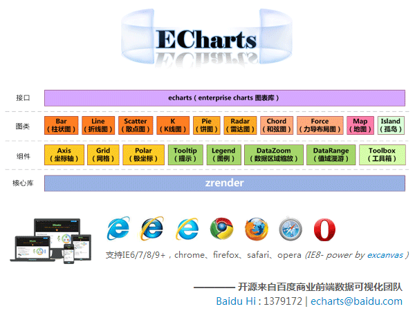
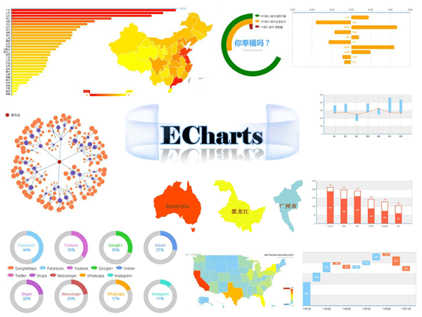
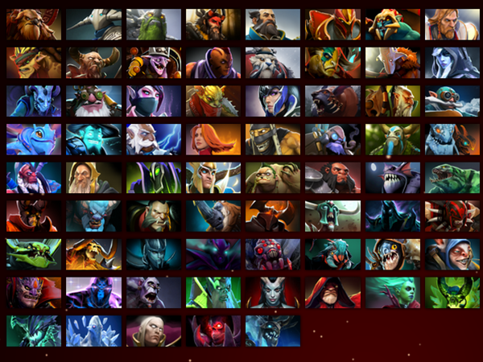

Visualization
- echarts
-
Enterprise Charts
基于Canvas，纯Javascript图表库，提供直观，生动，可交互，可高度个性化定制的数据可视化图表。创新的拖拽重计算、数据视图、值域漫游等特性大大增强了用户体验，赋予了用户对数据进行可视化分析的能力。
GitHub - zrender
-
Zlevel Render
一个全新的轻量级Canvas类库，MVC封装，数据驱动，易于扩展，提供类Dom的分层机制和事件模型，promise式的动画接口，让canvas绘图大不同！
GitHub - qtek
-
Webgl Graphic Library
Qtek is a high quality webgl graphic library. It is still an experiment version.
GitHub
-
ECharts (Enterprise Charts，商业级数据图表)
 -
ECharts (Enterprise Charts)
 -
ZRender (一个全新的轻量级Canvas类库)

-
qtek (Enterprise Charts)
 -
qtek (Enterprise Charts)